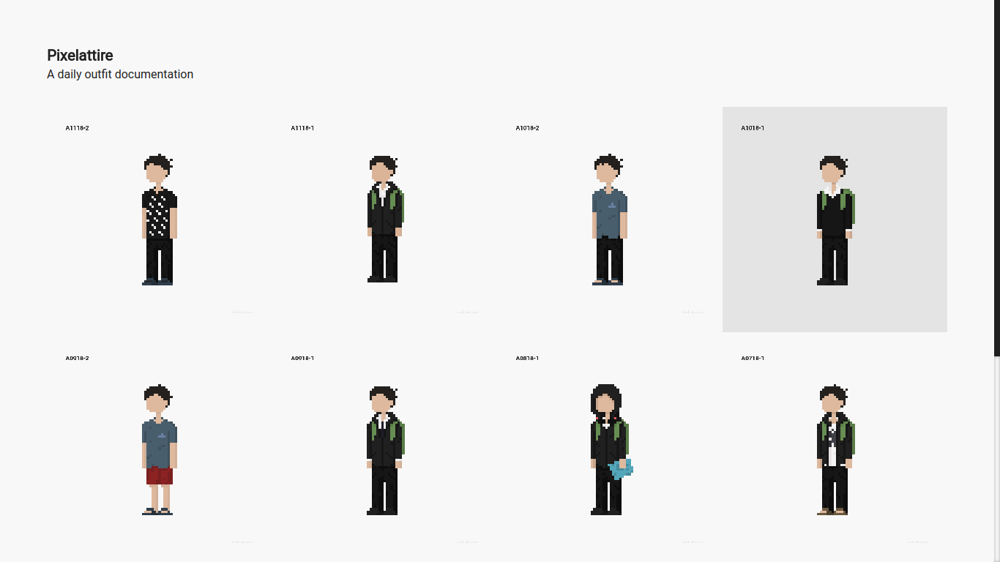

Pixelattire is a daily pixel art project where I document what I wear every day throughout 2018 through pixel art self-portraits. The custom Tumblr theme used is available here.
I plan on continuing this project next year perhaps with a system that generates pixel art from text logs.
A0118–Z1118 · 289 logs · 44.99 h · 43.98 VI · 0.94 DV · 0.07 MN